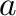
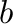
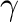
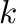

Next: Running the code Up: Cluster expansion construction using Previous: Cluster expansion construction using
The maps code needs two input files: one that specifies the geometry of the parent lattice (lat.in) and one that provides the parameters of the first-principles calculations (xxxx.wrap, where xxxx is the name of the first-principles code used). The clear separation between the thermodynamic and first-principles calculations is a distinguishing feature of atat that enables the package to be easily interfaced with any first-principles code. Table 5.1 gives two annotated examples of a lattice geometry input file. The package includes ready-made lattice files for the common lattice types (e.g. bcc, fcc, hcp). It also includes an utility that automatically constructs multiple lattice geometry input files for common lattices. For instance,
| makelat Al,Ti fcc,bcc,hcp |
Example 1: hcp Ti-Al system
| 3.1 3.1 5.062 90 90 120 | (Coordinate system:    notation) |
| 1 0 0 | (Primitive unit cell: one vector per line |
| 0 1 0 | expressed in multiples of the above coordinate |
| 0 0 1 | system vectors) |
| 0 0 0 Al,Ti | (Atoms in the lattice) |
| 0.6666666 0.3333333 0.5 Al,Ti |
Example 2: rocksalt CaO-MgO pseudobinary system
| 0 0.5 0.5 | |
| 0.5 0 0.5 | |
| 0.5 0.5 0 | |
| 0 0 0 Ca,Mg | (“Active” atoms in the lattice) |
| 0.5 0.5 0.5 O | (“spectator” ion) |
The first-principles input file is usually less than 10 lines long, thanks to the dramatic improvements in the user-friendliness of most modern first-principles codes. For instance, in the case of the widely used VASP code [13,12], a typical input file is given in Table 5.2. Examples of such input files are provided with the package. Note that atat contains a utility that enables the automatic construction of -point meshes from a single parameter defining the desired target -point density, the number of -point per reciprocal atom (KPPRA).
| [INCAR] | |
| PREC = high | |
| ENMAX = 200 | |
| ISMEAR = -1 | |
| SIGMA = 0.1 | |
| NSW=41 | |
| IBRION = 2 | |
| ISIF = 3 | (See vasp manual for a description of the above 6 parameters.) |
| KPPRA = 1000 | (Sets the -point density (K Point Per Reciprocal Atom)) |
| DOSTATIC | (Performs a “static run” -- see vasp manual) |